Generación 3D local proceso 43 · 2026-11-20
Pedido del autor: «Hagamos esa prueba, sí, con edificios, el aldeano y quizás un caballo, y veamos qué podemos hacer.»
Todo corre en la PC (RTX 2060 Super de 8 GB, 31 GB de RAM), gratis y sin cuentas, dentro de un scope de systemd con tope de 10 GB, de a un proceso por vez.
Instalado en /home/humodev/_01_Projects/gen3d (61 GB: 47 GB de pesos, 8 GB del entorno de Python). Paso a paso y tropiezos en el README.
Recomendación
- Hunyuan3D-2mini turbo para todo: personas, edificios y animales. 4–8 s de forma por pieza (menos de 1 min con la carga), 5 GB de VRAM y 9 GB de RAM. Las formas son claramente mejores que las de TripoSR.
- Para personas con hoja de frente y espalda, Hunyuan3D-2mv turbo resuelve mejor la espalda, pero la diferencia no se ve a la escala del RTS, y el pico de RAM (10,2 GB) roza el tope.
- La cadena completa:
gen3d.py(forma),gen3d_blender.py(4–5 mil caras),gen3d_color.py(color proyectado desde la misma imagen) y el GLB al juego. Unos 2 minutos por pieza, sin tocar nada a mano. - Lo que falta para escalarlo: la textura propia de Hunyuan (Paint) o un mejor proyector, el rig del aldeano en Godot (el esqueleto ya sale) y el del caballo, y estirar los edificios a
altura_min_cmcomo hace el juego con los GLB de hoy.
En el juego cámara del RTS (pitch 54°, fov 30), escala de escala_visual

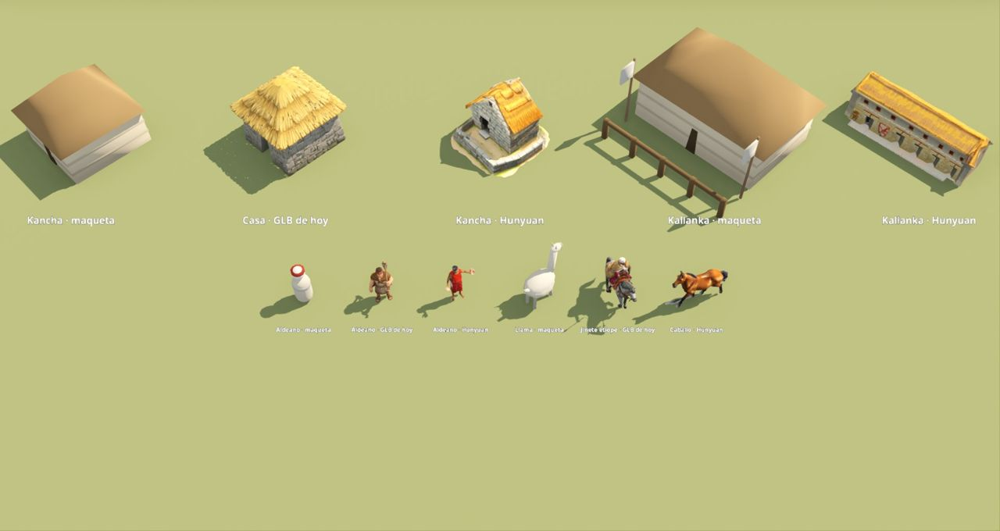
altura_min_cm que el juego aplica: por eso se ven más bajos que las maquetas.
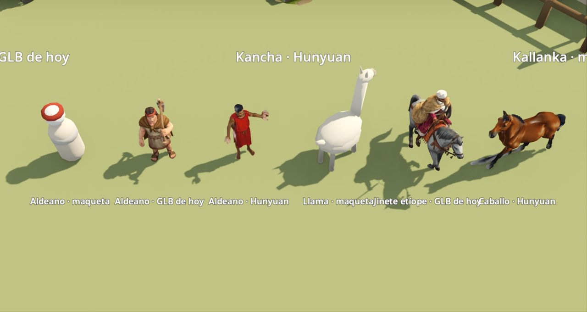
Modelo por pieza
| Pieza | Modelo | Calidad | Forma (s) | Con carga (s) | VRAM pico (GB) | RAM pico (GB) | Caras crudas | Caras finales |
|---|---|---|---|---|---|---|---|---|
| Aldeano | Hunyuan3D-2mini turbo | Buena: túnica, cordón, manos y pies | 4,9 | 102* | 5,0 | 8,9 | 136 837 | 4 000 |
| Aldeano | Hunyuan3D-2mini (50 pasos) | Igual que turbo, apenas más detalle | 28,9 | 126 | 4,6 | 8,2 | 168 656 | — |
| Aldeano | Hunyuan3D-2mv turbo (frente + espalda) | La mejor: espalda resuelta | 5,6 | 37 | 6,1 | 10,2 | 145 084 | 4 000 |
| Aldeano | TripoSR | Blando, cara y manos borradas | 2,8 | 10 | 3,1 | 4,1 | 34 308 | 4 000 |
| Kancha (casa) | Hunyuan3D-2mini turbo | Buena: muro bajo, puerta, ventana, techo | 4,1 | 46 | 5,0 | 9,4 | 550 480 | 4 000 |
| Kancha (casa) | TripoSR | Torcida: copia la inclinación del ícono | 2,8 | 9 | 3,1 | 4,1 | 103 532 | 4 000 |
| Kallanka (cuartel) | Hunyuan3D-2mini turbo | Buena: puertas, ventanas y escudo en relieve | 7,6 | 53 | 5,0 | 9,2 | 188 660 | 5 000 |
| Kallanka (cuartel) | TripoSR | Torcida y hueca por abajo | 2,7 | 9 | 3,1 | 4,1 | 82 536 | — |
| Caballo | Hunyuan3D-2mini turbo | Buena: cuatro patas, crin y cola | 6,7 | 60 | 5,0 | 8,9 | 203 751 | 4 000 |
| Caballo | TripoSR | Aceptable, con base pegada a las patas | 2,7 | 9 | 3,1 | 4,1 | 76 884 | 4 000 |
| Todas | Stable Fast 3D | No probado: los pesos piden cuenta en Hugging Face | — | |||||
* La primera corrida incluye leer los pesos del disco. Reducción en Blender: 1–10 s por pieza. Color proyectado: 3–20 s. VRAM: pico de toda la placa con nvidia-smi; RAM: RSS máximo del proceso. Detalle en medidas/.
Con color, reducidos frente · costado · tres cuartos · cámara del RTS (Blender, Workbench)
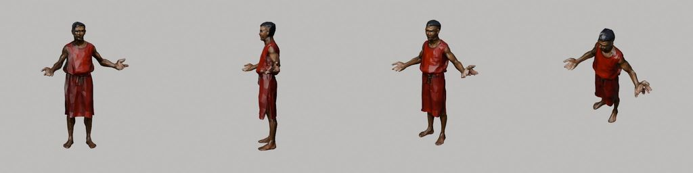
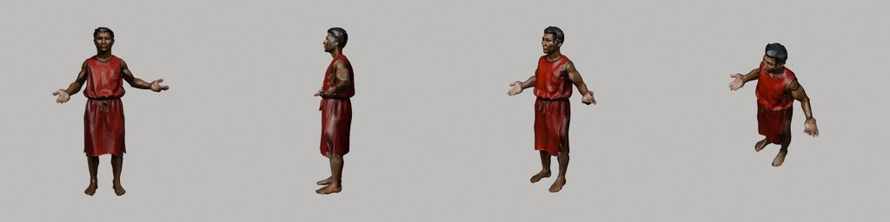
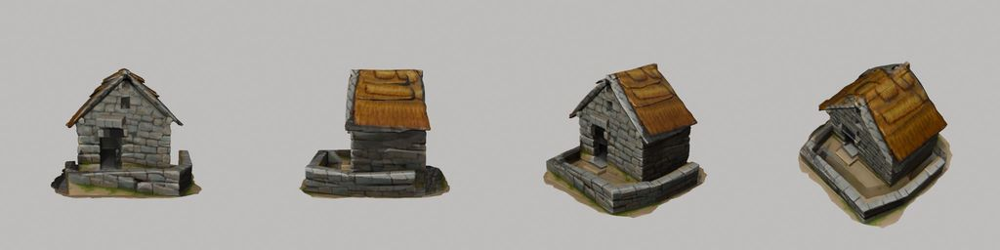
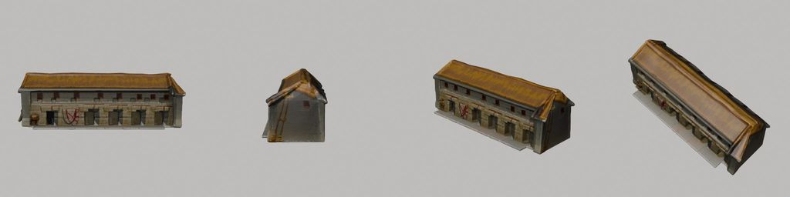
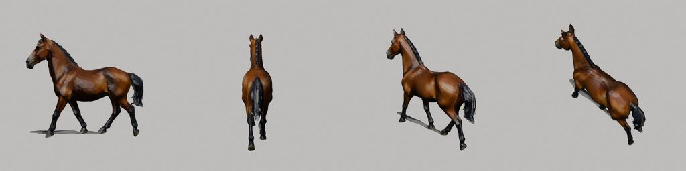
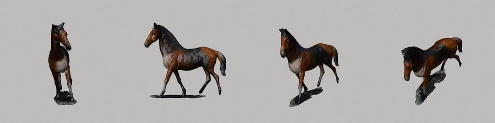
Formas crudas sin color, vista rápida sin GPU

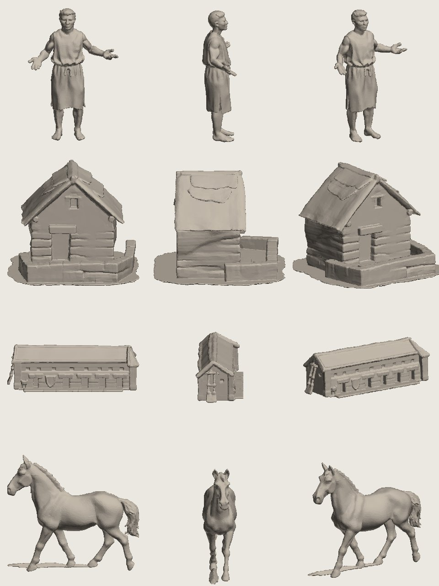

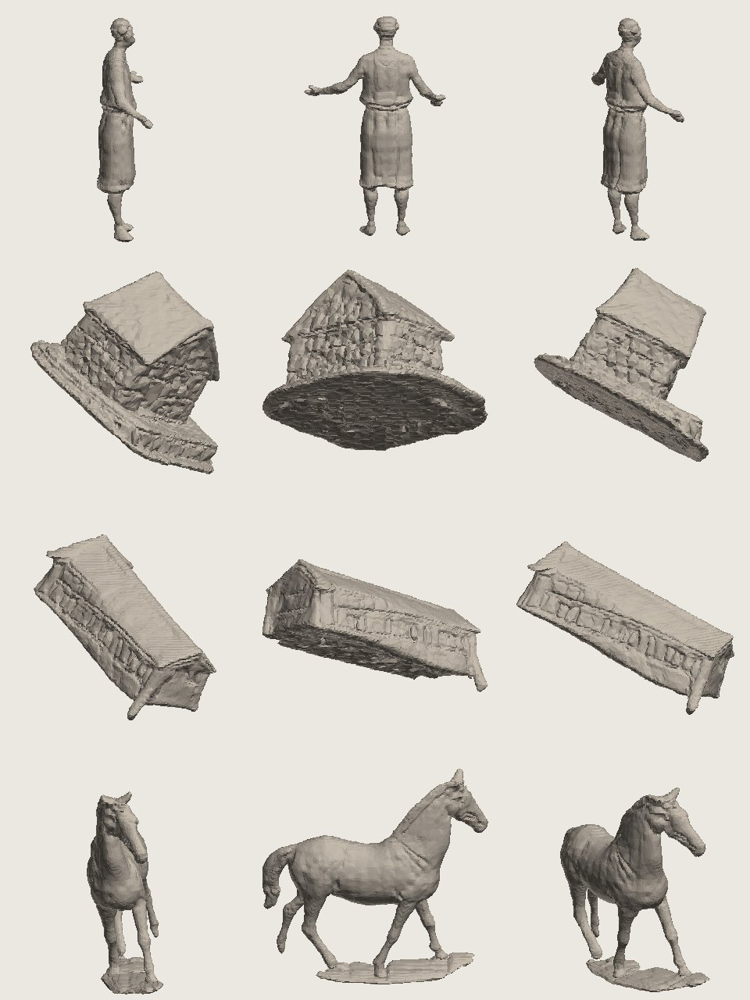

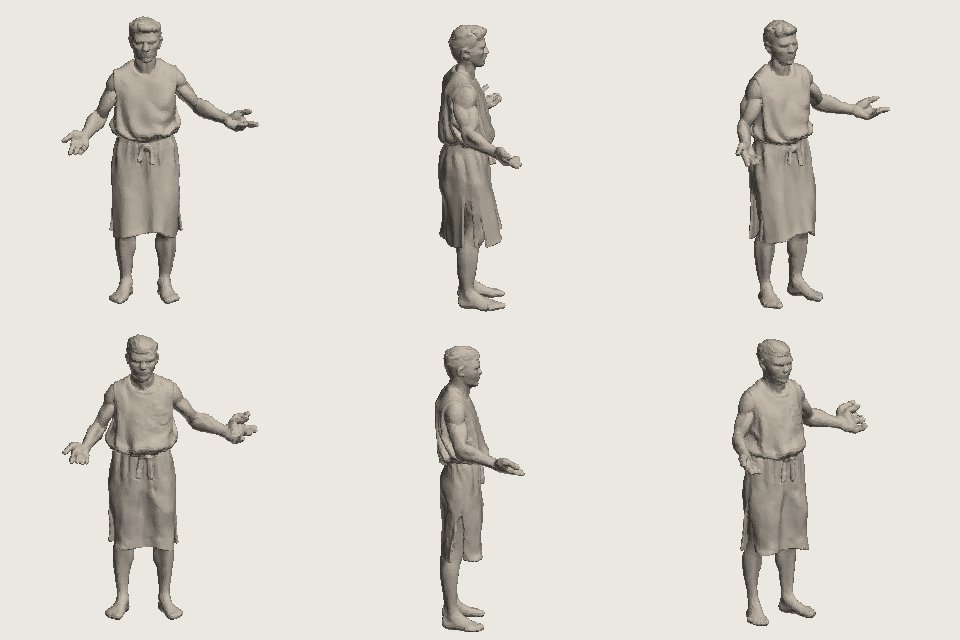
Entradas
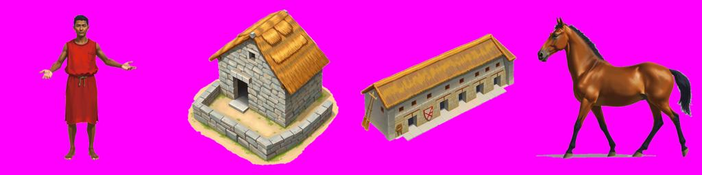
tools/gen3d_entradas.py).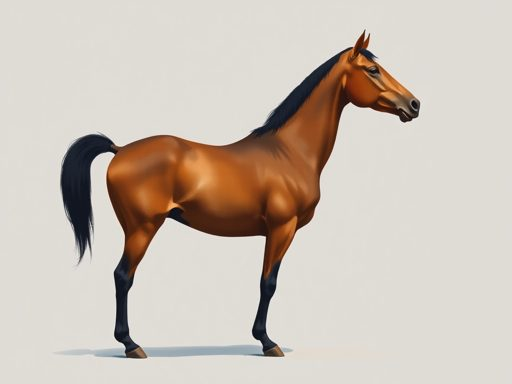
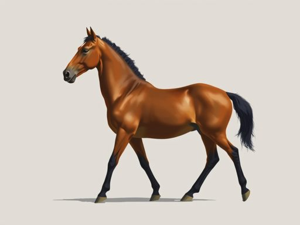
Rigging
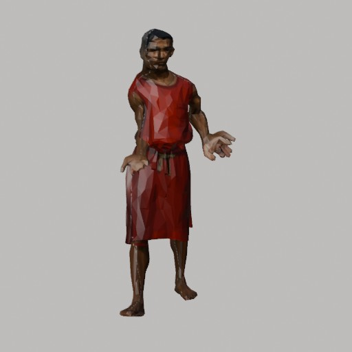
tools/gen3d_rig.py): 19 huesos con los nombres de KayKit Rig_Medium, articulaciones halladas en la malla y pesos automáticos. Ningún vértice quedó sin peso.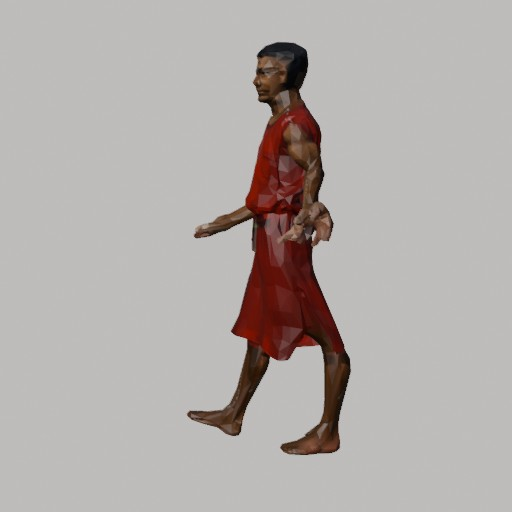
- Aldeano: el GLB riggeado está en
gen3d/rig/aldeano_rig.glb. En Godot, al importarlo: Skeleton3D → Retarget →BoneMapconSkeletonProfileHumanoid(Rest Fixer: «Overwrite Axis» y «Fix Silhouette»), con el mismo mapa quepersonas_kaykit.glb(tabla en proceso/27). Así le sirve laAnimationLibraryde KayKit. No se probó en el juego. - Mixamo (necesita cuenta, es manual):
gen3d/rig/aldeano_mixamo.fbx, malla sola con la textura adentro. Subirlo, marcar mentón, muñecas, codos, rodillas e ingle, bajar el FBX «Without Skin» y mapear los huesosmixamorig:*con el mismoBoneMap, que Godot reconoce solo. - Autorrigs locales con IA (UniRig y otros): piden flash-attn, spconv y compilar con CUDA; quedaron afuera.
- Caballo: pendiente. Hace falta un esqueleto de cuadrúpedo (Rigify trae uno de caballo como metarig) y animaciones propias: KayKit no trae caballos.
Qué funciona y qué no
- Hunyuan3D-2mini turbo y 2mv turbo, TripoSR y Blender headless entran en 8 GB de VRAM y en el tope de 10 GB de RAM.
- La reducción a 4–5 mil caras no pierde nada visible a la escala del RTS.
- El color proyectado desde la misma imagen basta para el RTS y mantiene el gouache.
- Hunyuan3D-Paint (la textura propia): falta compilar
custom_rasterizercon el toolkit de CUDA (no está instalado; el pip de nvcc no traenvcc, y el gcc 16 es más nuevo de lo que acepta CUDA 12.8). - Stable Fast 3D: el repositorio de pesos está cerrado; hay que aceptar la licencia con una cuenta de Hugging Face.
- FLUX en ComfyUI no entra en 10 GB sin
--cache-none: con esa opción, sí. - El edificio desde un ícono trae el suelo del ícono (la kancha tiene su base de tierra). Para el juego conviene recortarla o pedir el ícono sin suelo.
Licencias
| Modelo | Licencia |
|---|---|
| Hunyuan3D-2, 2mini, 2mv y Paint | Tencent Hunyuan 3D Community License. Excluye la UE, el Reino Unido y Corea del Sur (Uruguay está bien). Más de 1 M de usuarios activos por mes pide licencia aparte. |
| Stable Fast 3D | Stability AI Community License: gratis por debajo de 1 M USD de ingresos al año. |
| TripoSR | MIT. |
| FLUX.1 schnell (el caballo) | Apache 2.0. |
| Blender | GPL (la herramienta; lo que se exporta es nuestro). |